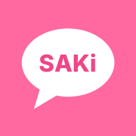

SAKi Talk 시작하기
가족·친구끼리만 쓰는 광고 없는 메신저예요.
순서대로 따라 하면 5분이면 끝나요.
1초대 코드 받기
SAKi Talk 은 초대받은 사람만 가입할 수 있어요. 관리자에게 초대 링크나 8자리 초대 코드를 받아 주세요.
받은 초대 코드
초대 코드는 정해진 횟수와 날짜까지만 쓸 수 있어요. 안 되면 관리자에게 새로 받아 주세요.
2회원가입
- 초대 링크를 누르거나 아래 가입하러 가기를 눌러요.
아이폰은 꼭 사파리로 열어 주세요. - 초대받아 가입 칸에서 초대 코드를 넣어요. 초대 링크로 열면 벌써 채워져 있어요.
- 본명을 넣어요. 로그인할 때 아이디로 써요.
- 닉네임은 채팅에 보이는 이름이에요. 비워 두면 본명이 보여요.
- 비밀번호를 6자 이상으로 두 번 넣고 가입하기를 눌러요.
본명과 비밀번호를 꼭 기억해 두세요. 앱을 설치한 뒤 한 번 더 로그인할 수 있어요. 비밀번호를 잊으면 관리자에게 새 비밀번호를 받으면 돼요.
가입하러 가기3홈 화면에 앱 설치
설치하면 주소줄 없이 앱처럼 열리고, 새 메시지 알림도 받을 수 있어요. 앱 가게에서 받는 게 아니라 인터넷 창에서 바로 설치해요.
- 사파리로 SAKi Talk 을 열어요.
- 아래쪽 공유 단추를 눌러요.
공유 단추가 안 보이면 오른쪽 아래 ··· 를 먼저 눌러요. - 목록을 아래로 내려 홈 화면에 추가를 눌러요.
- 오른쪽 위 추가를 누르면 홈 화면에 핑크 SAKi Talk 아이콘이 생겨요.
아이폰은 사파리에서 가입했어도 설치한 앱에서 한 번 더 로그인해야 해요. 본명과 비밀번호를 넣으면 돼요. 알림은 홈 화면에 설치한 앱에서만 받을 수 있어요 (iOS 16.4 이상).
쉬운 방법: 로그인한 뒤 아래쪽 설정 탭에서 앱 설치하기를 누르고 설치를 눌러요.
단추가 안 보이면 쓰는 인터넷 앱에 맞춰 아래처럼 해요.
삼성 인터넷
- 아래쪽 메뉴 ≡ 를 눌러요.
- 현재 페이지 추가 → 홈 화면을 눌러요.
크롬
- 오른쪽 위 메뉴 ⋮ 를 눌러요.
- 홈 화면에 추가 → 설치를 눌러요. (앱 설치로 보이기도 해요)
4앱 열고 알림 켜기
- 이제부터는 인터넷 창 말고 홈 화면의 SAKi Talk 아이콘으로 열어요.
- 로그인하면 새 메시지 알림을 받을까요? 창이 떠요. 알림 허용을 누르고, 휴대폰이 물어보면 한 번 더 허용을 눌러요.
- 나중에 켜려면 설정 탭의 새 메시지 알림 스위치를 켜요. 시험 알림 보내기로 잘 오는지 볼 수 있어요.
알림이 안 오면 휴대폰 설정 → 알림에서 SAKi Talk (안드로이드는 크롬이나 삼성 인터넷) 알림이 켜져 있는지, 방해 금지·집중 모드가 켜져 있지 않은지 봐 주세요.